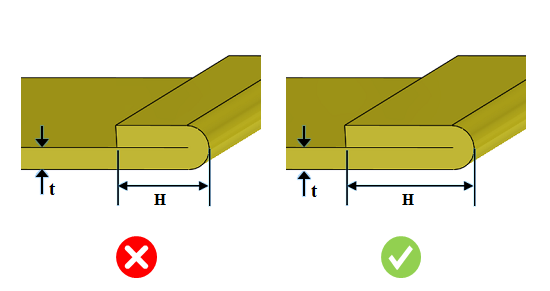

リターンフランジ長さと板厚の比率は、ユーザーが指定した値以上である必要があります。
曲げ加工では、板材と工具との間に十分な接触が必要です。接触が不十分な場合、板材がせん断されたり、不適切な曲げが発生する可能性があります。そのため、リターンフランジ長さ（H）を適切に確保する必要があります。
一般的なガイドラインとして、リターンフランジ長さ（H）と板厚の比率は 4 以上であることが推奨されます。
DFMPro はリターンフランジ長さを識別し、リターンフランジ長さと板厚の比率を算出します。この比率は、設定された比率と照合して検証されます。
ユーザーは、デフォルトで設定されている比率を編集することができます。
ルール UI では、材料の一覧が Map Material から読み込まれ、ユーザーは材料およびその値を設定することができます。
材料とその値を設定した後、Ctrl+M コマンドを使用して、ルール UI 上で材料グループおよびグレードとともに設定済み材料の一覧をフィルタ表示できます。同じキー（Ctrl+M）を使用してフィルタをリセットできます。

ここでは、
t = 板厚
H = リターンフランジ長さ